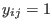
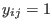
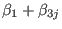
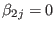
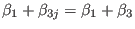

Next: 臨床試験への混合効果モデル：ポアソン回帰モデル Up: 経時的繰り返し測定デザイン Previous: 臨床試験への混合効果モデル：正規線形回帰モデル
> ### 第8章：ロジスティック回帰モデル
> # データ
> data("respiratory", package="HSAUR2")
> data8.1 <- respiratory
> data8.1$treatment <- (data8.1$treatment=="treatment")*1
> data8.1$gender <- (data8.1$gender=="male")*1
> data8.1$status <- (data8.1$status=="good")*1
> head(data8.1)
centre treatment gender age status month subject
1 1 0 0 46 0 0 1
112 1 0 0 46 0 1 1
223 1 0 0 46 0 2 1
334 1 0 0 46 0 3 1
445 1 0 0 46 0 4 1
2 1 0 0 28 0 0 2
> # 各時点でstatus=1となるオッズ比
> (tab8.1.1 <- xtabs(~status+month, data=data8.1[data8.1$treatment==1,]))
month
status 0 1 2 3 4
0 30 17 16 15 20
1 24 37 38 39 34
> (tab8.1.0 <- xtabs(~status+month, data=data8.1[data8.1$treatment==0,]))
month
status 0 1 2 3 4
0 31 29 35 31 32
1 26 28 22 26 25
> (odds8.1.1 <- apply(tab8.1.1, 2, function(x){return(x[2]/x[1])})) # Treatment
0 1 2 3 4
0.800000 2.176471 2.375000 2.600000 1.700000
> (odds8.1.0 <- apply(tab8.1.0, 2, function(x){return(x[2]/x[1])})) # Placebo
0 1 2 3 4
0.8387097 0.9655172 0.6285714 0.8387097 0.7812500
ベースライン時点に対するオッズ比を群ごとに示したものが下の図。 これは母集団平均モデルの考え方。
ベースライン時点での個人差  が与えられた下で 
となる条件付き確率のロジットをモデル化する。
が与えられた下で 
となる条件付き確率のロジットをモデル化する。
ただし，

とする。
このとき，共変量が全て同じ値の個人について，
ただし，

とする。
RによるモデルIの推定
> # モデルI（ベースラインの個人差のみ考慮）
> library(glmmML)
> library(lme4)
> library(multcomp)
> fit8.1 <- glmmML(status~centre+gender+age+treatment*dummy(month),
+ cluster=subject, data=data8.1,
+ na.action=na.omit, family=binomial,
+ method="ghq", n.points=20) # ガウスエルミート求積，20ポイント
> summary(fit8.1)
Call: glmmML(formula = status ~ centre + gender + age + treatment *
dummy(month), family = binomial, data = data8.1, cluster = subject,
na.action = na.omit, method = "ghq", n.points = 20)
coef se(coef) z Pr(>|z|)
(Intercept) -2.813e-01 0.86030 -0.3269242 0.744000
centre2 2.029e+00 0.59084 3.4340880 0.000595
gender -4.157e-01 0.73973 -0.5619094 0.574000
age -3.024e-02 0.02192 -1.3794655 0.168000
treatment -1.785e-01 0.73627 -0.2424255 0.808000
dummy(month)1 2.781e-01 0.52785 0.5269232 0.598000
dummy(month)2 -5.593e-01 0.53166 -1.0520373 0.293000
dummy(month)3 -7.339e-05 0.52692 -0.0001393 1.000000
dummy(month)4 -1.390e-01 0.52727 -0.2637116 0.792000
treatment:dummy(month)1 1.718e+00 0.79176 2.1695760 0.030000
treatment:dummy(month)2 2.728e+00 0.80816 3.3760574 0.000735
treatment:dummy(month)3 2.348e+00 0.80803 2.9060745 0.003660
treatment:dummy(month)4 1.641e+00 0.77807 2.1095096 0.034900
Scale parameter in mixing distribution: 2.443 gaussian
Std. Error: 0.3405
LR p-value for H_0: sigma = 0: 6.793e-30
Residual deviance: 565.9 on 541 degrees of freedom AIC: 593.9
> fit8.1 <- glmer(status~centre+gender+age+treatment*dummy(month)+(1|subject), data=data8.1,
+ na.action=na.omit, family=binomial,
+ glmerControl(optimizer = c("bobyqa", "Nelder_Mead")))
警告メッセージ:
checkConv(attr(opt, "derivs"), opt$par, ctrl = control$checkConv, で:
Model failed to converge with max|grad| = 0.0216601 (tol = 0.001, component 1)
> summary(fit8.1)
Generalized linear mixed model fit by maximum likelihood (Laplace Approximation) ['glmerMod']
Family: binomial ( logit )
Formula: status ~ centre + gender + age + treatment * dummy(month) + (1 | subject)
Data: data8.1
Control: glmerControl(optimizer = c("bobyqa", "Nelder_Mead"))
AIC BIC logLik deviance df.resid
599.9 660.4 -286.0 571.9 541
Scaled residuals:
Min 1Q Median 3Q Max
-3.2753 -0.3823 0.1482 0.4301 1.9873
Random effects:
Groups Name Variance Std.Dev.
subject (Intercept) 5.318 2.306
Number of obs: 555, groups: subject, 111
Fixed effects:
Estimate Std. Error z value Pr(>|z|)
(Intercept) -0.27298 0.83097 -0.329 0.742531
centre2 2.03814 0.57267 3.559 0.000372 ***
gender -0.41470 0.71057 -0.584 0.559484
age -0.03097 0.02111 -1.467 0.142375
treatment -0.15097 0.71997 -0.210 0.833909
dummy(month)1 0.27837 0.52341 0.532 0.594839
dummy(month)2 -0.54497 0.52890 -1.030 0.302829
dummy(month)3 0.01015 0.52304 0.019 0.984518
dummy(month)4 -0.13015 0.52369 -0.249 0.803723
treatment:dummy(month)1 1.69148 0.78409 2.157 0.030985 *
treatment:dummy(month)2 2.68348 0.80123 3.349 0.000810 ***
treatment:dummy(month)3 2.30317 0.80039 2.878 0.004008 **
treatment:dummy(month)4 1.61315 0.77160 2.091 0.036560 *
---
Signif. codes: 0 ‘***’ 0.001 ‘**’ 0.01 ‘*’ 0.05 ‘.’ 0.1 ‘ ’ 1
Correlation matrix not shown by default, as p = 13 > 12.
Use print(x, correlation=TRUE) or
vcov(x) if you need it
convergence code: 0
Model failed to converge with max|grad| = 0.0216601 (tol = 0.001, component 1)
> cont1 <- matrix(c(0,0,0,0,0,0,0,0,-1,0,0,0,1),1)
> at4m <- glht(fit8.1, linfct=cont1)
> summary(at4m)
Simultaneous Tests for General Linear Hypotheses
Fit: glmer(formula = status ~ centre + gender + age + treatment *
dummy(month) + (1 | subject), data = data8.1, family = binomial,
control = glmerControl(optimizer = c("bobyqa", "Nelder_Mead")),
na.action = na.omit)
Linear Hypotheses:
Estimate Std. Error z value Pr(>|z|)
1 == 0 1.743 1.191 1.463 0.143
(Adjusted p values reported -- single-step method)
以上の結果をもとに，各群ごとにベースラインに対するオッズ比を示したものが以下の図。
ロジスティック回帰モデルにおいて個体間差を考慮した場合（個体特異的モデル），母集団平均モデルと比べてオッズ比1からの離れ具合がより極端になる。
この違いは，
| Time 0 | Time 1 | |
| good | 24 | 37 |
| poor | 30 | 17 |
となる。
| Time 1 good | Time 1 poor | |
| Time 0 good | 24 | 0 |
| Time 0 poor | 13 | 17 |
となる4。
P.108- 「この対応のあるオッズ比は，Model I におけるを局外母数と考え，これに対する十分統計量である反応変数の和
で条件付けした，条件付き尤度を最大にする治療効果の最尤推定値であり（第12章），

実際の臨床試験では，治療効果を評価する期間を事前に定め，
RによるモデルIVの推定
> data8.1$post <- as.numeric(data8.1$month!=0)
> head(data8.1)
centre treatment gender age status month subject post
1 1 0 0 46 0 0 1 0
112 1 0 0 46 0 1 1 1
223 1 0 0 46 0 2 1 1
334 1 0 0 46 0 3 1 1
445 1 0 0 46 0 4 1 1
2 1 0 0 28 0 0 2 0
>
> fit8.4 <- glmer(status~centre+gender+age+treatment*post+(1|subject),
+ data=data8.1, na.action=na.omit, family=binomial)
> summary(fit8.4)
Generalized linear mixed model fit by maximum likelihood (Laplace Approximation) ['glmerMod']
Family: binomial ( logit )
Formula: status ~ centre + gender + age + treatment * post + (1 | subject)
Data: data8.1
AIC BIC logLik deviance df.resid
592.8 627.3 -288.4 576.8 547
Scaled residuals:
Min 1Q Median 3Q Max
-2.9707 -0.3756 0.1568 0.4124 2.0754
Random effects:
Groups Name Variance Std.Dev.
subject (Intercept) 5.111 2.261
Number of obs: 555, groups: subject, 111
Fixed effects:
Estimate Std. Error z value Pr(>|z|)
(Intercept) -0.27564 0.81795 -0.337 0.736121
centre2 2.00688 0.56209 3.570 0.000356 ***
gender -0.40938 0.69801 -0.586 0.557542
age -0.03017 0.02073 -1.456 0.145480
treatment -0.15311 0.71081 -0.215 0.829451
post -0.10148 0.41117 -0.247 0.805056
treatment:post 2.04577 0.62072 3.296 0.000981 ***
---
Signif. codes: 0 ‘***’ 0.001 ‘**’ 0.01 ‘*’ 0.05 ‘.’ 0.1 ‘ ’ 1
Correlation of Fixed Effects:
(Intr) centr2 gender age trtmnt post
centre2 -0.152
gender 0.032 -0.156
age -0.702 -0.213 -0.263
treatment -0.427 -0.004 0.159 -0.026
post -0.402 -0.005 0.001 0.003 0.462
tretmnt:pst 0.245 0.086 -0.013 -0.020 -0.642 -0.665
本文中でSASを用いた結果と若干異なっている。 （glmmMLを用いてガウス・エルミート求積，求積点20とテキストと同じ方法でやってもあまり違いはない。）
このとき，  が

であり，治療効果は

となるので，これを と書くことにする。
と書くことにする。
RによるモデルII.Bの推定
> # モデルII.B（治療期間を通じて一定の個人差を考慮）
> # ベースラインデータをstatus0として整形
> data8.1B <- data8.1[data8.1$post==1,]
> data8.1B$status0 <- rep(data8.1$status[data8.1$post==0], each=4)
> data8.1B$month <- factor(as.numeric(data8.1B$month))
> head(data8.1B)
centre treatment gender age status month subject post status0
112 1 0 0 46 0 2 1 1 0
223 1 0 0 46 0 3 1 1 0
334 1 0 0 46 0 4 1 1 0
445 1 0 0 46 0 5 1 1 0
113 1 0 0 28 0 2 2 1 0
224 1 0 0 28 0 3 2 1 0
>
> fit8.2B <- glmmML(status~centre+gender+age+status0+treatment*dummy(month),
+ cluster=subject, data=data8.1B, na.action=na.omit,
+ family=binomial, method="ghq", n.points=20)
> summary(fit8.2B)
Call: glmmML(formula = status ~ centre + gender + age + status0 + treatment * dummy(month), family = binomial, data = data8.1B, cluster = subject, na.action = na.omit, method = "ghq", n.points = 20)
coef se(coef) z Pr(>|z|)
(Intercept) -1.25564 0.87655 -1.43249 1.52e-01
centre2 1.06463 0.57241 1.85990 6.29e-02
gender 0.20258 0.70367 0.28790 7.73e-01
age -0.02561 0.02114 -1.21143 2.26e-01
status0 3.10153 0.61669 5.02932 4.92e-07
treatment 1.76666 0.75018 2.35496 1.85e-02
dummy(month)3 -0.88564 0.55172 -1.60524 1.08e-01
dummy(month)4 -0.29213 0.54245 -0.53855 5.90e-01
dummy(month)5 -0.44101 0.54377 -0.81102 4.17e-01
treatment:dummy(month)3 1.06399 0.81423 1.30674 1.91e-01
treatment:dummy(month)4 0.65428 0.81165 0.80611 4.20e-01
treatment:dummy(month)5 -0.06920 0.79860 -0.08665 9.31e-01
Scale parameter in mixing distribution: 2.09 gaussian
Std. Error: 0.3461
LR p-value for H_0: sigma = 0: 8.387e-15
Residual deviance: 421.1 on 431 degrees of freedom AIC: 447.1
RによるモデルVの推定
> # モデルV.B（治療期間を通じて効果も個人差も一定）
> fit8.5B <- glmer(status~centre+gender+age+status0+treatment+(1|subject),
+ data=data8.1B, na.action=na.omit, family=binomial,
+ glmerControl(optimizer = c("bobyqa", "Nelder_Mead")))
> summary(fit8.5B)
Generalized linear mixed model fit by maximum likelihood (Laplace Approximation) ['glmerMod']
Family: binomial ( logit )
Formula: status ~ centre + gender + age + status0 + treatment + (1 | subject)
Data: data8.1B
Control: glmerControl(optimizer = c("bobyqa", "Nelder_Mead"))
AIC BIC logLik deviance df.resid
443.0 471.7 -214.5 429.0 437
Scaled residuals:
Min 1Q Median 3Q Max
-2.7832 -0.3652 0.1428 0.3735 2.1801
Random effects:
Groups Name Variance Std.Dev.
subject (Intercept) 3.86 1.965
Number of obs: 444, groups: subject, 111
Fixed effects:
Estimate Std. Error z value Pr(>|z|)
(Intercept) -1.64315 0.78096 -2.104 0.035378 *
centre2 1.04334 0.54606 1.911 0.056050 .
gender 0.20183 0.67055 0.301 0.763416
age -0.02539 0.02008 -1.265 0.205943
status0 3.06822 0.60033 5.111 3.21e-07 ***
treatment 2.15614 0.55445 3.889 0.000101 ***
---
Signif. codes: 0 ‘***’ 0.001 ‘**’ 0.01 ‘*’ 0.05 ‘.’ 0.1 ‘ ’ 1
Correlation of Fixed Effects:
(Intr) centr2 gender age stats0
centre2 -0.089
gender -0.010 -0.147
age -0.714 -0.223 -0.263
status0 -0.390 -0.151 0.102 0.016
treatment -0.435 0.058 0.220 -0.050 0.300
テキストのSASによる結果とはいくぶん異なる。 なお，glmmML() を用いるともっとSASに近い結果になる。
Taichi Okumura